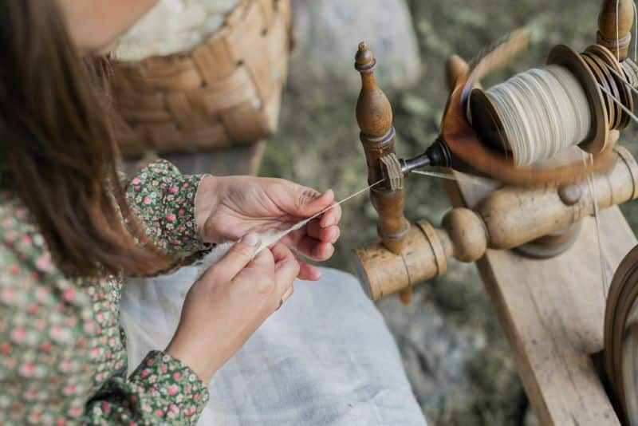
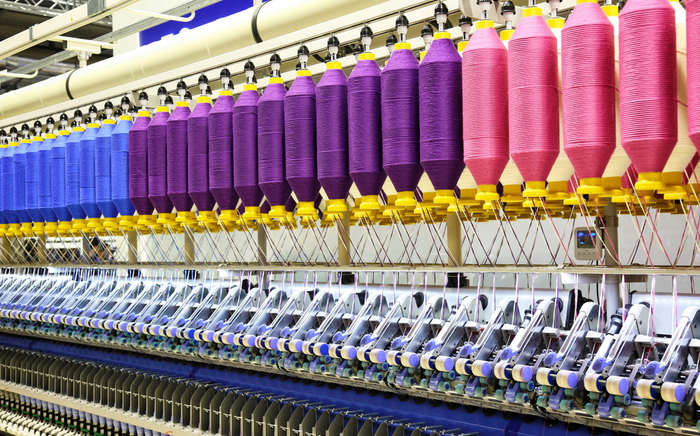

Background
Tracing back to almost 40,000 years ago, we can find yarn being used to make clothing. Traditionally, yarn could be made from the fur of a soft animal such as a sheep and be hand-spun into a long continuous strand, which would be your yarn.

Yarn Today
Yarn today has significantly changed since the beginnning of its first debut. Yarn today will go through industrial sized machhines to be cleaned,woven together, and spun. As you get into yarn types, you will find that yarn made by hand and dyed by hand will be more expensive than yarn made in a factory.
